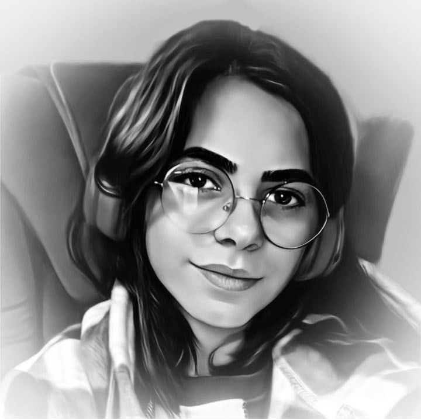

Haziran 2003 yılında Çorum'un İskilip ilçesinde doğdum.İlköğretimimi Ebusuud Efendi'de tamamladıktan sonra
Ankara'ya taşındık. Alparslan Ortaokulunda okudum.Lİse hayataıma Elvankent Mesleki ve Teknik Anadolu Lisesi'nde
başladım ve bitirdim.Burada almış olduğum sayısal derslerin yanısıra meslek derslerimde de C#, HTML,CSS,PHP,JavaScript,SQL gibi
programlama dillerinde; Dreamweaver, Fireworks programlarında eğitim gördüm. İş Bankasında "Bilgi İletişim" bölümünde staj yaptım.
Görevim teknolojik aletlerin tamiri ile ilgiliydi.